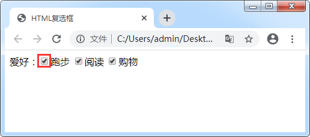
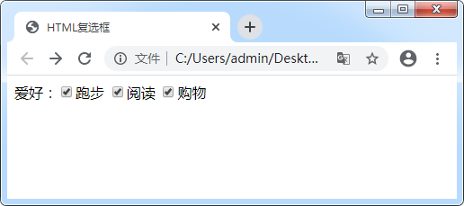

首页 > 编程笔记
HTML复选框
正常情况下，单选按钮只能实现选中一个的效果。例如《HTML <input>标签》中的爱好字段，这时用户想选择多个，就不能再使用单选按钮了，可以使用 HTML 中的复选框。复选框与单选按钮不同，用户通过点击就可以实现选中或取消，而且不限制选中的数量。
在 HTML 中，把 <input> 标签中的 type 属性设置为 checkbox 可以实现多选框的效果。具体语法格式如下：

图3：带 value 值的复选框
通过运行结果可以发现，与单行文本框和密码框不同，复选框的 value 值并不显示在页面上。建议为复选框设置不同的 value 属性值，这样在数据提交时，后台可以非常清楚的知道提交的是哪个字段。
本节我们将讲述第一种使用方法：

图4：带 id 属性的复选框
复选框中的 <label> 标签和单选按钮中的 <label> 标签使用方法相同，分为 2 点：
在 HTML 中，把 <input> 标签中的 type 属性设置为 checkbox 可以实现多选框的效果。具体语法格式如下：
<input type="checkbox" />
1. 复选框的常用属性
| 常用属性 | 说明 |
|---|---|
| checked | 用来规定在页面加载时应该被预先选定的 input 元素，当属性值为 checked 时，可以省略。 |
| value | 用来定义被选中时发送到服务器的值。同一组中每个按钮的值应该不同，这样服务器才能辨别提交的是哪一项。 |
| id | 规定 HTML 元素的唯一 id。id 值在整个页面是唯一的，不会重复。 |
1) checked属性
checked 属性用来设置页面加载时复选框的选中状态。当属性值为“checked”时，对应的复选框会被选中。下面我们通过一个简单的示例来进行演示：
<form action="http://vip.biancheng.net/register.php" method="post" name="formName">
爱好：<input type="checkbox" name="running" checked>跑步
<input type="checkbox" name="reading" checked>阅读
<input type="checkbox" name="shopping" checked>购物
</form>
运行结果如图所示：

图1：复选框
通过运行结果可以发现，当 name 属性值不同且为复选框都设置checked时，它们都被选中。那么如果我们为 name 属性设置相同的值，会是什么效果呢？
<form action="http://vip.biancheng.net/register.php" method="post" name="formName">
爱好：<input type="checkbox" name="running" id="run" checked>跑步
<input type="checkbox" name="running" id="read" checked>阅读
<input type="checkbox" name="running" id="shop" checked>购物
</form>
运行结果如图所示：

图2：name 值相同的复选框
图2：name 值相同的复选框
与我们预期的结果可能不太一样：在为单选按钮设置相同的 name 属性值时，只有一个可以被选中，而复选框都被选中了，那么我们是不是可以随便设置复选框的 name 属性呢？当然是不建议的，因为后台在获取用户输入数据时，如果 name 属性相同，很容易混淆。
2) value属性
复选框也有 value 属性，我们来看一下使用方法：
<form action="http://vip.biancheng.net/register.php" method="post" name="formName">
爱好：<input type="checkbox" name="running" checked value="run">
<input type="checkbox" name="reading" checked value="read">
<input type="checkbox" name="shopping" checked value="shop">
</form>
运行结果如图所示：
图3：带 value 值的复选框
通过运行结果可以发现，与单行文本框和密码框不同，复选框的 value 值并不显示在页面上。建议为复选框设置不同的 value 属性值，这样在数据提交时，后台可以非常清楚的知道提交的是哪个字段。
3) id属性
为复选框设置 id 属性的目的与单选框相同，共分为 3 种：- 配合 <label> 标签使用；
- 通过 JavaScript 获取元素，对元素进行一系列操作；
- 通过 CSS 选择元素，为其添加样式。
本节我们将讲述第一种使用方法：
<form action="http://vip.biancheng.net/register.php" method="post" name="formName">
爱好：<input type="checkbox" name="running" id="run" checked value="run"><label for="run">跑步</label>
<input type="checkbox" name="reading" id="read" checked value="read"><label for="read">阅读</label>
<input type="checkbox" name="shopping" id="shop" checked value="shop"><label for="shop">购物</label>
</form>
运行结果如图所示：
图4：带 id 属性的复选框
复选框中的 <label> 标签和单选按钮中的 <label> 标签使用方法相同，分为 2 点：
- <label> 标签主要用来为 <input> 元素定义标记；
- 当 <label> 标签和 for 属性配合使用时， for 属性指向<input>元素的 id 属性。当点击 <label> 标签的内容时，<input> 元素也有相应变化。
我们建议所有的复选框都与 <label> 标签配合使用，一是为了用户体验，二是为了在使用 JavaScript 语言操作数据时更加方便。
2. 总结
关于复选框还有几点需要引起读者的注意：- 复选框可以多选，不限制选中的数量；
- 复选框要想被正确提交，必须设置 name 属性，而且每个复选框的 name 属性值和 value 属性值都建议不同；
- 复选框建议与 <label> 标签配合使用；
- <label> 标签中的 for 属性指向复选框的 id 属性，类似绑定。
关注公众号「站长严长生」，在手机上阅读所有教程，随时随地都能学习。内含一款搜索神器，免费下载全网书籍和视频。

微信扫码关注公众号